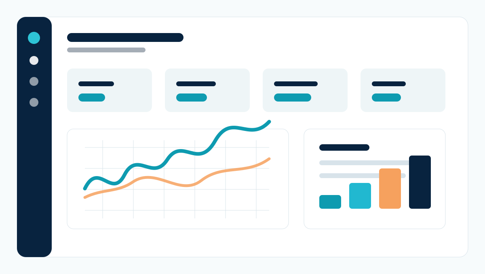
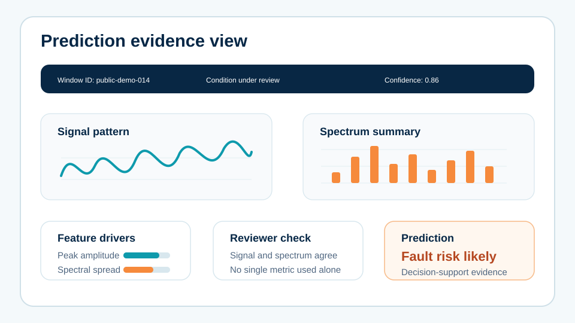
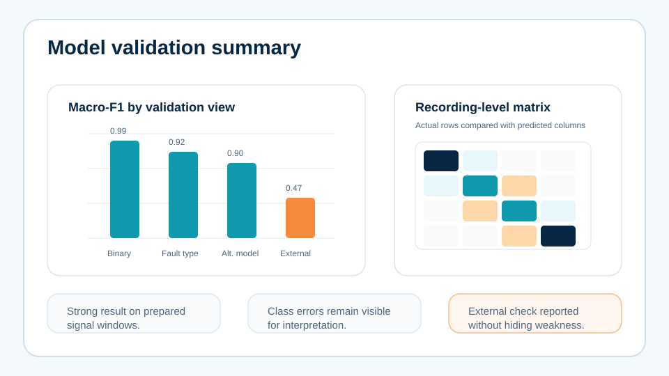
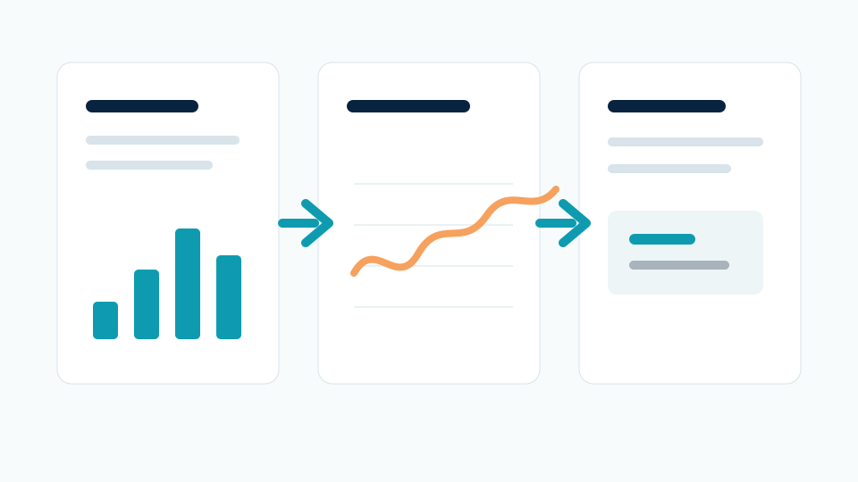

Dataset preparation
Recorded signal files were organised into analysis-ready windows with healthy and faulty condition groups.
A public-safe case study based on a completed research analytics project. The original work involved vibration data, feature extraction, model comparison, result reporting and a small demonstration interface for testing machine-condition predictions.

The project needed more than charts. It needed a complete analysis path: load machine-condition recordings, extract signal-window features, compare models, explain the stronger and weaker results, and present everything in a way a reviewer could follow.
For confidentiality, the public version uses a neutral industrial-maintenance label and recreated visuals. The workflow, deliverable types and technical depth reflect the real work.
Recorded signal files were organised into analysis-ready windows with healthy and faulty condition groups.
Time-domain and frequency-style features were prepared so the models could compare behaviour across recordings.
Multiple classifiers were compared using metrics such as accuracy, precision, recall and F1-style summaries.
A small interface was prepared to show run status, prediction evidence, result summaries and exported figures.
The workflow reads prepared condition files and checks the available recording groups before analysis starts.
Signals are split into consistent windows so feature extraction and comparison are fair across classes.
Models are trained and compared so the report can justify why one approach performs better than another.
The demo view presents signal patterns, feature summaries, model metrics and prediction status in one place.



A notebook-style workflow for data preparation, feature extraction, model comparison and figure generation.
Charts for class balance, metric comparison, feature behaviour and report-ready visual explanation.
A cleaned summary of accuracy, precision, recall and F1-style performance for selected model runs.
A practical interface view for loading saved results, checking progress and presenting prediction evidence.
Chapter-ready wording for requirements, interface description, dataset summary and result interpretation boundaries.
Careful separation between strong primary results and weaker external checks so the report did not overclaim.
The final work gave the client a clearer result story: what data was used, how features were prepared, how models were compared, what the main result showed, and how the system could be demonstrated through a simple interface.
This is the type of project page visitors need to see before ordering: not just “we analyse data”, but a practical example of analysis, visuals, report support and demo presentation working together.
Send your topic, dataset status, required tools, expected report format and deadline. MAFUBAM will review the scope before quoting.